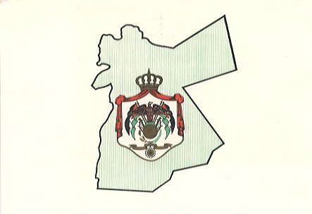
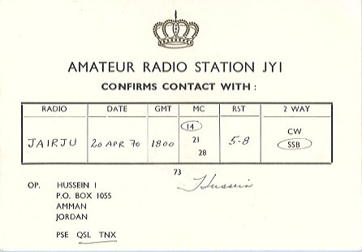
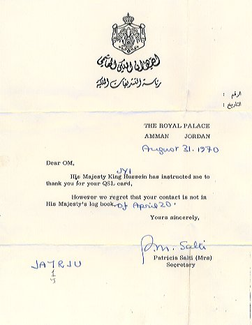

JY1・Jordan


JY1のコールサインでアマチュア無線にもアクティブに
活躍したヨルダンのフセイン国王(King Hussein)のQSL。
1999年2月7日、09:30zに死去した。

1994年には英国のUKSMGのDX-Peditionに、フセイン国王の特別
の計らいでJY7SIXのコールサインで初めて6mの運用が許可された。
6mではMulti hop Esの北米を含む49ctry・1,800(1,200局)QSO。
Back to QSL Album